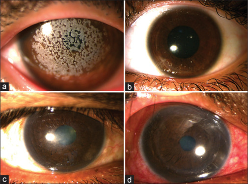
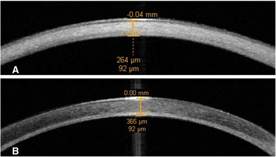
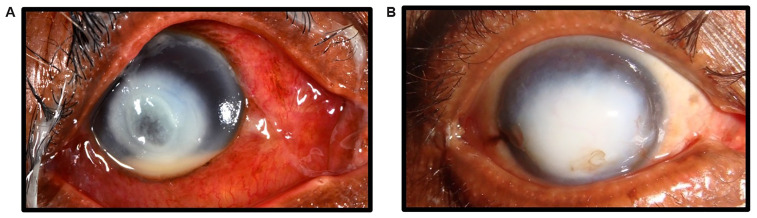

3201 — Sẹo giác mạc sau loét đã lành: đo gì để quyết định ghép, và ghép loại nào / Healed corneal scar — measurement and graft selection
Tags: pattern:seo-giac-mac pattern:duc-giac-mac pattern:tan-mach-giac-mac pattern:phu-giac-mac vung:mat vung:giac-mac protocol:AS-OCT protocol:den-khe protocol:topography protocol:specular-microscopy score:ECD
Mức chắc chắn (certainty): tổng hợp y văn (literature synthesis) — nhóm tự biên, không có bệnh nhân của mình. Số liệu chính: 205 mảnh giác mạc cắt trong ghép (sẹo "lâm sàng yên" vẫn còn viêm mô học) PMID 39860466 (PMC11765851); PTK 334 mắt (độ sâu cắt, hyperopic shift, biến chứng) PMID 35544925 (PMC11826725); SALK 75 mắt RCT (ngưỡng đục 200 µm trên AS-OCT) PMID 40243069 (PMC12356419); ghép trong sẹo do trachoma (PKP vs lamellar) PMID 39556607 (PMC11573149); 10 năm DMEK/DSAEK/PK 2.956 mắt PMID 39774993 (PMC11707042); xu hướng chỉ định ghép 7 năm PMID 40319196 (PMC12049314); tái phát HSV sau ghép PMID 40909445 (PMC12405224). Ảnh: PMC12149813, PMC4354740, PMC12356419.
Câu chốt: sẹo giác mạc không phải một bệnh, mà là một độ sâu. Ba câu hỏi quyết định mổ: (1) sẹo sâu bao nhiêu µm trên AS-OCT? (2) nội mô còn tốt không (ECD, phù, guttata)? (3) bề mặt nhãn cầu có nuôi được mảnh ghép không (khô, tân mạch, sẹo kết mạc)? Trả lời 3 câu đó sẽ chọn đúng PTK/SALK (nông) → DALK (sâu, nội mô tốt) → PKP (toàn bề dày) → DSEK/DMEK (chỉ nội mô). Sai lầm hay gặp: ghép xuyên cho một sẹo nông 150 µm (mất nội mô lành, tăng thải ghép) hoặc PTK cho sẹo sâu 400 µm (thủng/thải).
1. Tổng quan bệnh học – cơ chế hình ảnh (TẠI SAO)
1.1 Ngưỡng định lượng (số phải nhớ)
- Gánh nặng: 10–12 triệu người có sẹo giác mạc, khoảng 250.000 người mù do sẹo (PMC11765851).
- Sẹo "yên" vẫn có viêm: trong 205 mảnh giác mạc cắt trong PKP vì sẹo trung tâm lâm sàng không hoạt động (HSV 55, keratoconus 39, chấn thương cơ học 27, scrophulosa 22, khác 62), mô học vẫn phát hiện viêm mức độ khác nhau; nhóm "có viêm" có thải ghép 56% và thất bại ghép 44%, nhóm "không viêm" là 33% (PMC11765851).
- Tỉ lệ thải ghép theo nguyên nhân sẹo: keratoconus 13/39 (33%), chấn thương cơ học 11/27 (41%), scrophulosa khác biệt có ý nghĩa với ngưỡng điểm viêm thấp 0,06 (p = 0,041) (PMC11765851).
- Sẹo do trachoma (mô hình "giác mạc xấu"): 302 mảnh ghép, 71% trong; PKP 161/195 (83%) so với lamellar 18/20 (90%); thải ghép 31/167 (19%) ở PKP so với 0/20 ở lamellar; thị lực sau mổ > 6/60 ở 63% (PMC11573149).
- PTK (334 mắt): độ cắt tối đa trung bình 72,7 ± 32,1 µm (10–142 µm), vùng quang học 6,8 ± 0,43 mm, hyperopic shift ~1,0 D sau 2 năm; haze 1,5%, tái phát 0,9%, mổ lại 1,5%; giác mạc mỏng nhất trước mổ 492,6 ± 63,4 µm (PMC11826725).
- SALK (75 mắt RCT): chỉ định đục nông ≤ 200 µm đo bằng AS-OCT; thị lực 1,32 → 0,62 logMAR sau 6 tháng; microkeratome không thua femtosecond (PMC12356419).
- 10 năm, 2.956 mắt (FECD): ghép sống PK 92% vs DMEK 75% vs DSAEK 73%; nhưng thị lực ≥ 6/12 trong 5 năm: DMEK 93%, DSAEK 83%, PK 63%; thải ghép: DMEK 10%, PK 13%, DSAEK 19%; xác suất ECD > 1.000 tế bào/mm² ở 10 năm: PK 18%, DSAEK 8%, DMEK 3% (PMC11707042).
- Chỉ định ghép (7 năm, trung tâm Trung Quốc): viêm giác mạc nhiễm 45,25%, sẹo trắng/leucoma 13,59%, suy nội mô 8,94%, chấn thương 6,70% (PMC12049314).
1.2 TẠI SAO sẹo lại trắng — và tại sao độ sâu là biến số chính
- Tán xạ ánh sáng: giác mạc trong vì sợi collagen type I đường kính đồng nhất (~30 nm) xếp song song, khoảng cách đều < bước sóng → giao thoa triệt tiêu ánh sáng tán xạ. Sẹo thay bằng collagen type III + fibronectin + glycosaminoglycan và myofibroblast → sợi to, không đều, khoảng cách ngẫu nhiên → tán xạ tăng = đục.
- Hệ quả lâm sàng: độ đục phụ thuộc vị trí theo trục quang và độ sâu; sẹo nông 100 µm ở trục đồng tử làm giảm thị lực nhiều hơn sẹo sâu 400 µm ở ngoại vi. Vì vậy phải đo cả độ sâu (µm) và khoảng cách tới trục thị giác (mm).
- TẠI SAO chỉ thay phần bị bệnh: nội mô không tái sinh, nhưng nếu còn tốt thì giữ lại là tối ưu — ghép lamellar (SALK/DALK) không mở tiền phòng, không có thải ghép nội mô, ECD không giảm do mảnh ghép. Đây là lý do vật lý cho tỉ lệ thải 0/20 ở lamellar so với 19% ở PKP trong loạt trachoma (PMC11573149).
- TẠI SAO sẹo "yên" vẫn có thể thải: tế bào viêm cư trú mạn trong mô sẹo tiết cytokine; khi mở tiền phòng + khâu chỉ tạo kích thích mới, ổ viêm cũ bùng phát. Đây là cơ sở sinh học của việc chờ sẹo chín + kiểm soát viêm trước mổ (PMC11765851).
- TẠI SAO tân mạch là yếu tố xấu: mạch máu mang tế bào miễn dịch tới gần mảnh ghép, phá đặc quyền miễn dịch của tiền phòng → tăng thải ghép. Đo bằng số giờ đồng hồ (clock hours) tân mạch và khoảng cách tới rìa ghép (mm).
1.3 Mốc thời gian — số có thật và chỗ còn trống
- Sau ghép, HSV tái phát sớm: 40/411 (9,73%) mắt phát HSV giác mạc sau ghép, trong đó 65% trong 1–3 tháng đầu (PMC12405224) → cửa sổ nguy cơ cao là 3 tháng đầu, cần kháng virus dự phòng.
- Thời điểm ghép tối ưu: y văn không có ngưỡng thời gian thống nhất bằng RCT — thực hành phổ biến là chờ sẹo chín và mắt yên (thường ≥ 3 tháng sau khi hết nhiễm; ≥ 6–12 tháng nếu còn tân mạch hoạt động hoặc viêm tái diễn). Ghi rõ: chưa rõ ngưỡng chính xác — cần tra thêm, và quyết định dựa trên mô học nguy cơ (viêm tồn tại, tân mạch) hơn là đếm tháng.
2. Mẫu hình + chẩn đoán phân biệt theo độ sâu (gamut)
- Mẫu hình: đốm/mảng trắng xám khu trú ở nhu mô, bờ rõ hoặc nhòe, không mủ, không loét, không thấm fluorescein (biểu mô liền), giác mạc dày bình thường hoặc mỏng; tân mạch có thể kèm theo.
- Gamut theo tầng tổn thương — đây là gamut quyết định mổ:
| Tầng tổn thương | Đo trên AS-OCT | Thủ thuật phù hợp |
|---|---|---|
| Biểu mô – Bowman – nhu mô nông ≤ 100 µm | đục trong 1/3 trước, nhu mô còn lại trong | PTK (excimer 193 nm) |
| Nhu mô nông 100–200 µm | đục tới ~200 µm, nội mô tốt | SALK (lamellar nông) |
| Nhu mô giữa–sâu > 200 µm, nội mô tốt | đục sâu tới gần Descemet, ECD bình thường | DALK |
| Toàn bề dày / Descemet–nội mô tổn thương | mất dấu Descemet, phù nhu mô, ECD < 1.000 | PKP |
| Chỉ nội mô hỏng, nhu mô trong | nhu mô trong, phù, guttata | DSEK/DMEK |
- Gamut "giác mạc trắng" (phân biệt với sẹo): phù giác mạc do suy nội mô (dày > 640 µm, dấu hiệu nhìn thấy Descemet gấp nếp), loạn dưỡng (granular/macular/lattice), band keratopathy (vôi hóa dải kẽ mi), lắng đọng (amyloid, gelatinous drop-like), loạn sản bẩm sinh (sclerocornea/Peters), thâm nhiễm đang hoạt động (có mủ, thấm fluorescein, đau).
- Phân biệt "sẹo đã lành" với "còn hoạt động": không đau, không mủ, biểu mô liền, không thấm fluorescein, bờ ổn định ≥ 4 tuần; nếu còn bất kỳ dấu hiệu hoạt động → điều trị tiếp, chưa ghép.
3. Bảng so sánh phân biệt (ma trận đối chiếu)
| Thủ thuật | Chỉ định điển hình | Chốt vào (rule-in) | Chốt loại (rule-out) | Kết cục / số |
|---|---|---|---|---|
| PTK (phototherapeutic keratectomy) | Sẹo nông ≤ 100 µm, loạn dưỡng nông, band keratopathy, bề mặt không đều | Đục trong 1/3 trước, nhu mô dưới trong, nội mô tốt, độ dày ≥ 450 µm | Đục > 150 µm hoặc sát Descemet → thủng/thải; giác mạc mỏng < 400 µm | 334 mắt: cắt 72,7 ± 32,1 µm; haze 1,5%, tái phát 0,9%, mổ lại 1,5%; hyperopic shift ~1,0 D |
| SALK (superficial anterior lamellar KP) | Sẹo 100–200 µm, đục không đều, PTK sẽ lệch khúc xạ nhiều | AS-OCT: đục ≤ 200 µm; nội mô tốt; bề mặt nhãn cầu ổn | Đục > 200 µm → cần DALK; khô nặng/neurotrophic chưa kiểm soát | 75 mắt RCT: 1,32 → 0,62 logMAR sau 6 tháng; MK không thua FL |
| DALK (deep anterior lamellar KP) | Sẹo sâu > 200 µm nhưng nội mô tốt; keratoconus có sẹo sau hydrops | Đục tới gần Descemet, ECD bình thường, không phù, không guttata | Suy nội mô (ECD < 1.000)/phù → phải PKP hoặc EK; Descemet thủng lớn khi mổ → chuyển PKP | Thải ghép 25,8% (DALK) vs 34,6% (PKP) ở mắt VKC–KC (p = 0,30); không có thải nội mô |
| PKP (penetrating KP) | Sẹo toàn bề dày, Descemet/nội mô hỏng, thủng, không đủ nhu mô nhận | Đục toàn bề dày + ECD thấp/phù; không thể bóc Descemet an toàn | Sẹo nông + nội mô tốt → ghép xuyên là quá tay (mất nội mô lành, thải ghép) | Sẹo trachoma: sống 83%, thải 19%; 10 năm (FECD) sống 92% nhưng thị lực ≥ 6/12 chỉ 63% trong 5 năm |
| DSEK/DMEK (endothelial KP) | Chỉ nội mô hỏng: phù sau viêm nội mô, bullous keratopathy, Fuchs | Nhu mô trong, phù do nội mô, guttata/ECD thấp | Sẹo nhu mô thật (đục không mất khi hết phù) → không giải quyết bằng EK | 10 năm: ECD > 1.000 còn 3% (DMEK) / 8% (DSAEK); thải 10%/19%; thị lực nhanh (DMEK 7,8 tháng tới 6/12) |

(a) loạn dưỡng hạt nông và (c) sẹo nông trước mổ; (b, d) giác mạc trong sau SALK — minh họa nguyên lý "chỉ thay lớp bị bệnh" khi đục ≤ 200 µm và nội mô tốt. Nguồn: Indian J Ophthalmol 2025, Fig. 3, PMC12356419 — CC BY-NC-SA 4.0.Đo độ sâu trên AS-OCT — mảnh ghép lamellar nông

AS-OCT trước mổ (A) đo độ dày sẹo (264 µm) trên tổng bề dày 92 µm còn lại phía sau; sau DALK (B) bề dày tăng lên 365 µm. Đây là cách đo bằng số để chọn PTK/SALK/DALK. Nguồn: SpringerPlus 2015, Fig. 1, PMC4354740 — CC BY 4.0.4. Protocol đo + hệ quyết định
4.1 Sáu phép đo bắt buộc trước khi quyết định ghép
- AS-OCT (anterior segment OCT): độ sâu đục (µm), độ dày nhu mô còn lại phía sau sẹo (µm), bề dày trung tâm, dấu Descemet (còn/mất), khoảng cách sẹo tới trục thị giác (mm).
- Đếm nội mô (specular microscopy): ECD (tế bào/mm²), hệ số biến thiên, tỉ lệ lục giác, guttata. Ngưỡng thực hành: ECD < 1.000 hoặc phù nhu mô → không làm lamellar thuần.
- Bản đồ giác mạc (topography/tomography): độ không đều (irregularity), loạn thị không đều, Kmax, pachymetry — quyết định PTK có sửa được bề mặt hay cần ghép.
- Tân mạch: đếm số giờ đồng hồ và khoảng cách tới rìa ghép dự kiến (mm) — càng gần càng tăng thải ghép.
- Bề mặt nhãn cầu: thời gian vỡ phim nước mắt (TBUT), nhuộm fluorescein, cảm giác giác mạc, mi — khô/neurotrophic chưa kiểm soát = chống chỉ định tương đối mọi ghép.
- Đáy mắt + nhãn áp + siêu âm: sẹo đục che đục thể thủy tinh/võng mạc; mổ ghép trên mắt còn đục TTT nặng sẽ không cải thiện thị lực dù ghép trong.
4.2 Cây quyết định
flowchart TD
A[Sẹo giác mạc đã lành, mắt yên] --> B[AS-OCT: độ sâu đục + bề dày còn lại]
B --> C{Đục trong 100 µm đầu và nhu mô dưới trong?}
C -->|Có| D[PTK; nếu loạn thị không đều nhiều → cân nhắc topography-guided]
C -->|Không| E{Đục 100–200 µm?}
E -->|Có| F[SALK]
E -->|Không| G{Nội mô tốt: ECD > 1.000, không phù, không guttata?}
G -->|Có| H[DALK tới Descemet]
G -->|Không| I{Nhu mô còn trong, chỉ nội mô hỏng?}
I -->|Có| J[DSEK hoặc DMEK]
I -->|Không| K[PKP toàn bề dày]
D --> L[Theo dõi haze, hyperopic shift, tái phát nền]
F --> L
H --> M[Theo dõi interface, thải ghép, tái phát nền]
J --> M
K --> M
4.3 Chuẩn bị và theo dõi (số cụ thể)
- Trước mổ: điều trị viêm/bề mặt ổn định ≥ 4 tuần; HSV → acyclovir 400 mg × 2/ngày (hoặc valacyclovir) từ trước mổ, tiếp ≥ 6–12 tháng sau ghép vì 65% tái phát trong 1–3 tháng đầu (PMC12405224).
- PTK: mitomycin C 0,02% sau cắt để giảm haze (haze 1,5% trong loạt 334 mắt); cảnh báo hyperopic shift ~1,0 D; không cắt quá 100–150 µm ở trục.
- DALK: kiểm tra bong Descemet (double anterior chamber) ngày 1–7; interface haze thường giảm trong 6–12 tháng.
- PKP: ghép 7,5–8,5 mm cho sẹo trung tâm; cắt chỉ theo loạn thị + tuổi; theo dõi thải ghép (đỏ, giảm thị lực, dấu Khodadoust) — 19% trong loạt trachoma.
- Sau mọi ghép: thị lực + khúc xạ + AS-OCT + ECD ở 1, 3, 6, 12 tháng, sau đó hàng năm.
5. Biến thể bình thường và cạm bẫy
- "Sẹo" thực ra là phù nội mô: đục lan tỏa, dày > 640 µm, Descemet gấp nếp → EK chứ không phải ghép nhu mô; đo AS-OCT trước để tránh mổ sai.
- Đánh giá độ sâu bằng đèn khe thường thấp hơn thực tế: ánh sáng khe tán xạ làm sẹo trông nông hơn → luôn đo AS-OCT trước PTK.
- Ghép xuyên "cho chắc" ở sẹo nông: mất nội mô lành, tăng thải ghép, thị lực chậm hồi phục (PK 37,9 tháng tới 6/12 so với DMEK 7,8 tháng) (PMC11707042).
- PTK quá tay: cắt > 150 µm gây hyperopic shift lớn, haze, thậm chí thủng ở giác mạc < 400 µm.
- Bỏ qua đục thể thủy tinh/võng mạc: "ghép trong mà vẫn mờ" — siêu âm B + đáy mắt trước mổ; cân nhắc phaco đồng thời (bài 1462 về sinh trắc sau ghép).
- Ghép trên mắt khô/neurotrophic: biểu mô không liền → tan mảnh ghép; phải kiểm soát bề mặt trước (nước mắt nhân tạo, huyết thanh tự thân, ghép màng ối, đóng mi).
- Tân mạch bỏ qua: mạch tới rìa ghép < 2 mm làm tăng thải; cân nhắc cautery mạch + bevacizumab và ghép nhỏ hơn để tránh mạch.
- Sẹo "yên" nhưng viêm mô học: 56% thải ở nhóm có viêm so với 33% — không dùng "mắt không đỏ" làm tiêu chuẩn duy nhất (PMC11765851).
6. Tự lượng giá — Blind Quiz
Ca 1 — Nam 62 tuổi, sau viêm giác mạc nấm đã điều trị khỏi 5 tháng; mắt không đau, không mủ.

- Gợi ý lâm sàng: đã hết nhiễm, thị lực còn đếm ngón tay.
- Câu hỏi: (1) khác biệt hoạt động vs đã lành trên ảnh? (2) Cần đo gì trước khi nói tới ghép? (3) Nếu sẹo chỉ ở 150 µm thì chọn thủ thuật nào?
Bấm để hiện đáp án (findings + chẩn đoán)
- (A) đang hoạt động: thâm nhiễm trắng đục bờ nhòe, mủ tiền phòng, phù nhu mô, kết mạc sung huyết; (B) sẹo đã lành: đốm trắng đậm bờ rõ, không mủ, không thấm fluorescein, mắt trắng.
- Cần đo: AS-OCT (độ sâu đục, bề dày còn lại, Descemet), ECD, topography, tân mạch, bề mặt nhãn cầu, đáy mắt/TTT.
- 150 µm + nội mô tốt → SALK (hoặc PTK nếu đục rất nông và bề mặt đều); không ghép xuyên.
- Nguồn ảnh: Wellcome Open Research 2025, Fig. 1, PMC12149813 — CC BY 4.0.
Ca 2 — Nữ 40 tuổi, sẹo trung tâm; AS-OCT đo độ dày sẹo và nhu mô còn lại trước/sau mổ.
- Câu hỏi: đọc hai số đo trong ảnh. Vì sao đo độ dày còn lại phía sau sẹo lại quan trọng hơn độ dày toàn giác mạc?
Bấm để hiện đáp án
- (A) sẹo dày 264 µm, nhu mô còn lại 92 µm phía sau; (B) sau DALK femtosecond bề dày 365 µm.
- Vì quyết định mổ dựa trên mô lành còn lại: nếu còn ≥ 150–200 µm nhu mô trong + Descemet tốt thì bóc trên Descemet (DALK) được; nếu không còn nhu mô an toàn → PKP.
- Nguồn ảnh: SpringerPlus 2015, Fig. 1, PMC4354740 — CC BY 4.0.
Ca 3 — Bệnh nhân có đục nông lan tỏa; ảnh trước và sau can thiệp.
- Câu hỏi: (1) vì sao không dùng PTK cho ca (c)? (2) SALK khác PTK ở điểm nào? (3) Nêu một chống chỉ định của SALK.
Bấm để hiện đáp án
- (1) Đục dày, không đều, tới ~200 µm — PTK phải cắt nhiều gây hyperopic shift lớn + haze; (2) SALK cắt – thay một lớp nhu mô nông (đo trước bằng AS-OCT) thay vì bốc bay mô, nên giữ độ cong sinh lý tốt hơn; (3) đục > 200 µm, suy nội mô, khô/neurotrophic chưa kiểm soát.
- Kết quả loạt RCT: 1,32 → 0,62 logMAR sau 6 tháng, MK không thua FL.
- Nguồn ảnh: Indian J Ophthalmol 2025, Fig. 3, PMC12356419 — CC BY-NC-SA 4.0.
Bài liên quan chéo
- 400 – Tổng quan Mắt & thị giác
- 1460 – Viêm giác mạc do nấm (nguồn sẹo sau loét)
- 1472 – Viêm giác mạc do Acanthamoeba
- 3200 – Viêm giác mạc do Pythium insidiosum (ghép sớm khi lan rìa)
- 1462 – Sinh trắc và tính công suất IOL ở mắt đã ghép giác mạc
- 1456 – Bỏng hóa chất mắt cấp (sẹo + thiếu tế bào gốc rìa)
Ảnh
3201_seo-giac-mac_HoatDong-ThoatKhoi_PMC12149813.jpg— hoạt động vs sẹo (CC BY 4.0).3201_seo-giac-mac_AS-OCT_PMC4354740.jpg— đo độ dày sẹo trước/sau DALK (CC BY 4.0).3201_seo-giac-mac_SALK-TruocSau_PMC12356419.jpg— đục nông trước/sau SALK (CC BY-NC-SA 4.0).- Nguồn + giấy phép từng ảnh:
images/CREDITS.md; link gốc:sources.md.
Không dùng để chẩn đoán độc lập khi chưa có người hướng dẫn.